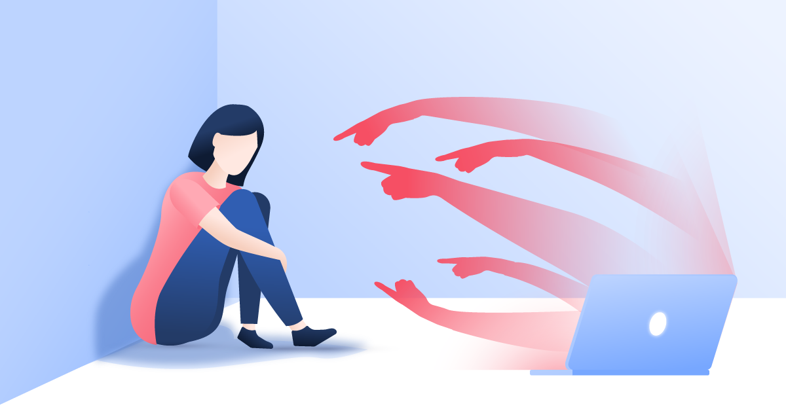

Internetes zaklatás:
A zaklatás (bullying) történhet otthon, az iskolában vagy más közösségekben is, de az
internethasználat terjedésével az online zaklatás is megjelent a mindennapokban. Az
internetes zaklatás során ugyanúgy érvényesül a három feltétel: erős, negatív tartalmat
közvetít a bántalmazó a bántalmazottnak, rendszeresen ismétli a tevékenységet, és
mindezt a hatalma fitogtatásával éri el. A neten gyakran úgy, hogy anonim módon,
arctalanul tesz bántó megjegyzéseket különböző közösségi oldalakon, vagy egy általa
készített előnytelen fotót, esetleg montázst oszt meg a zaklatás elszenvedőjéről.
|

|
Következményei:
Az online zaklatás, csakúgy, mint a többi bántalmazási forma, rossz érzéseket kelt a gyerekekben,
aláássa az önbizalmukat, az önértékelésüket, súlyos esetben meglévő barátaiktól is elszigeteli őket.
A magukra maradt gyerekek szorongani kezdenek, feszültté válhatnak, a folyamatos stresszhelyzet és
az, hogy nem élhetik a megszokott, hétköznapi életüket a zaklatás miatt, kihatással lehet a
teljesítményükre. Szétszórttá válnak, nem teljesítenek úgy az iskolában, mint korábban, elszakadnak
a korábbi kapcsolataiktól, az is előfordulhat, hogy még a szülőkkel való bizalmi viszony is
felbomlik. A feszültség hosszú távon egészségkárosító hatású, mentális, pszichés betegségekkel és
valódi fizikai tünetekkel is járhat. A kiskamaszok önkárosító magatartással próbálhatnak meg
átlendülni a nehézségeken, magukban keresve a hibát étkezési zavarok alakulhatnak ki náluk, vagdosni
kezdhetik magukat, vagy a legsúlyosabb esetben akár nagyon komolyan saját életük ellen is
fordulhatnak.
Szociális függés:
Az emberek szeretik, ha figyelmet kapnak, ennek van rossz és jó oldala is. Abból, hogyha valaki
híres tud pénzt keresni és sok esetben alig tesz meg valamit ahhoz, hogy megérdemelje. Nem csoda,
hogy manapság példaképként felnéznek a tinik rájuk. Régebben azért függöt a személyisgétől és az
egyediségtől, de ez mára már ritka. Bejöttek a köztudatba az úgynevezett "trendek", amiket több
millióan megcsinálnak. Legtöbb trend elég megosztó, de abban egyet lehet érteni, hogy mindenki
figyelmét felkelti. A régi sikerességet rendes, értelmes emberek képviselték, de a mai bulvár
"celebek" semmit nem tesznek azért, hogy ezt el lehessen mondani. Számomra furcsa az, hogy valaki
abból tud pénzt és nézettséget generálni, hogy levideózza a saját napját, ahol úgy viselkedik, mint
egy normál ember. Magyarország nincs jó helyen a szememben, mivel itt csak a másolás és az
értéktelen fröcsögések és egymás lejáratása megy. Nemrég elindult egy új, mai napra már teljes
világot behálózó alkalmazás, a Musical.ly(TikTok). Az itt látható tartalom pár másodperces, vagy
perces kis videókból állnak amiket görgetve nézhetünk. Nem tudjuk pontosan mi fog a szemünk elé
tárulni, de ha nem tetszik simán átmehetünk a következőre. Kihat az egészségre, koncentrációra és
egyéb szellemi fejlődésre.Ezeket a videókat kevesen tudják mértékben tartani, mivel mindig egy új
inger fogad minket. A gyerekekre nagyon rossz hatással van, mivel ők nem tudnak nagyon mit tenni
ezek ellen, nem tudják hol a határ, emiatt romlik a szociális életük. Itt nagyon gyors idő alatt
lehet belőlünk "sztár", de olyan gyorsan el is megy, ha nem vagyunk érdekesek, ezzel pedig
depresszió és más lelki problémák léphetnek fel. Más platformokon megjelennek a 18+-os tartalmak
ahol emberölések, szexuális tartalmak találhatóak, de ez sajnos még ez csak a jéghegy csúcsa. A
"klikkek" száma teljesen megbabonázza az embereket, és ebbe bele is lehet betegedni.